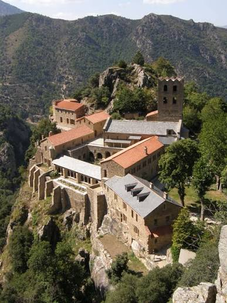

Abbaye
Saint-Martin
du Canigou


⟹ Abbayes & Édifices Sacrés ⟸
En 1005, le comte de Cerdagne Guifred II fait, avec son épouse Guisla, don d'un terrain sur les pentes du Canigou à une église déjà existante dédiée à saint Martin. Deux ans plus tard, en 1007, un nouvel acte fixe l'intention du couple : y établir des moines vivant selon la règle de saint Benoît, avec le soutien de l'évêque d'Elne.

Le chantier est mené par Oliba, propre frère de Guifred II et abbé de Saint-Michel-de-Cuxa. Le 13 novembre 1009, il consacre les deux églises superposées du monastère, bâties à flanc de rocher à plus de 1000 mètres d'altitude. Quelques années plus tard, l'arrivée des reliques de saint Gaudérique entraîne un agrandissement et une nouvelle consécration, vers 1014 ou 1026. Guifred II se retire lui-même dans l'abbaye à la fin de sa vie et y meurt en 1049.
Le monastère décline lentement à partir du XIIe siècle, ébranlé par des tentatives de rattachement à l'abbaye de Lagrasse, puis frappé par un séisme en 1428 qui endommage sérieusement les bâtiments et écrête le clocher. Sécularisée en 1782, la communauté est définitivement dispersée pendant la Révolution : les reliques de saint Gaudérique partent pour Perpignan, les ossements de Guifred II sont descendus à l'église de Casteil.
Il faut attendre 1902 pour qu'un nouvel élan naisse. Jules de Carsalade du Pont, évêque de Perpignan surnommé « l'évêque du Canigou », rachète les ruines et lance un vaste appel à la restauration : plus de 2000 personnes l'accompagnent lors de la reprise de possession du site. De 1952 à 1983, le moine bénédictin dom Bernard de Chabannes achève l'œuvre et fait renaître la vie spirituelle sur la montagne.
Depuis 1988, la Communauté des Béatitudes anime la vie spirituelle du site, perpétuant huit siècles de présence monastique sur la montagne. Les visiteurs peuvent assister aux offices et découvrir un mode de vie rythmé par la prière, hérité de la règle bénédictine.
Une prière qui n'a jamais tout à fait cessé de monter depuis ce piton du Canigou.
— Tradition monastique de l'abbayeLe site reste également associé à la tradition catalane de la Flamme du Canigou, célébrée chaque 23 juin lors de la Saint-Jean, qui redescend symboliquement du sommet vers les villages environnants.
Casteil, village au pied de l'abbaye, point de départ du sentier de montée.
Vernet-les-Bains, station thermale voisine, porte d'entrée du massif du Canigou.
Le massif du Canigou et le GR10, pour prolonger la randonnée vers les sommets.
Villefranche-de-Conflent, cité fortifiée par Vauban, à quelques kilomètres en aval.